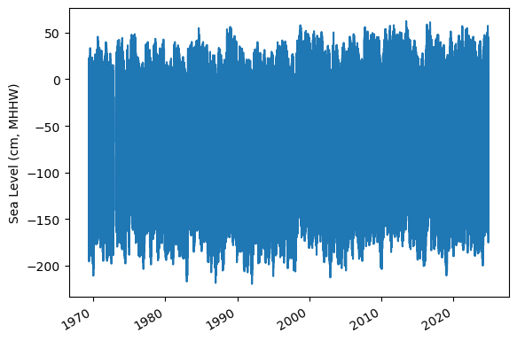
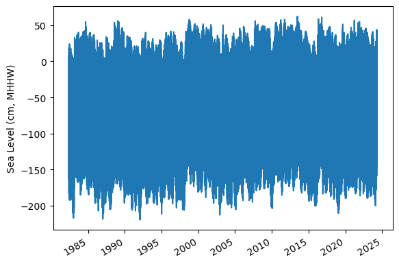
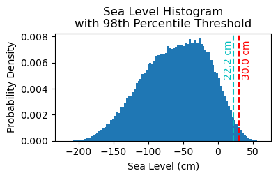
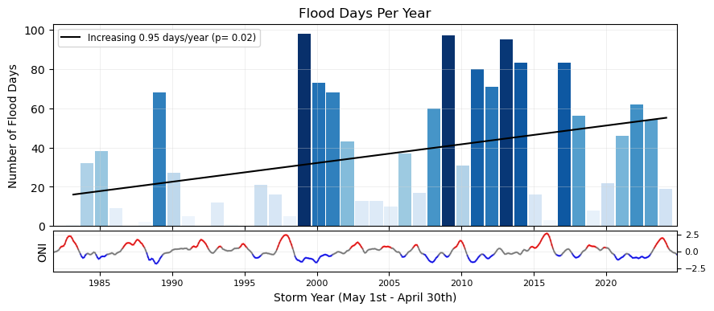
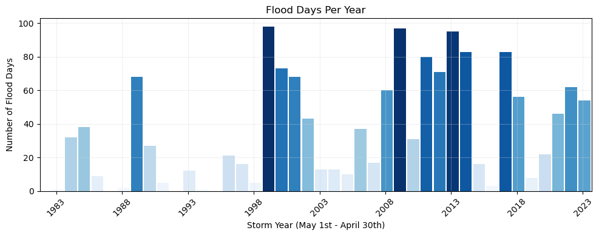
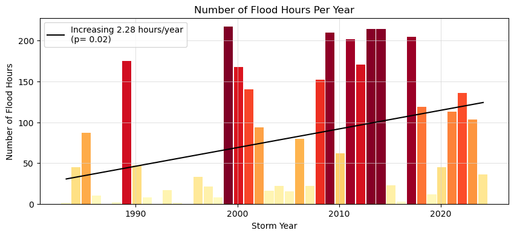
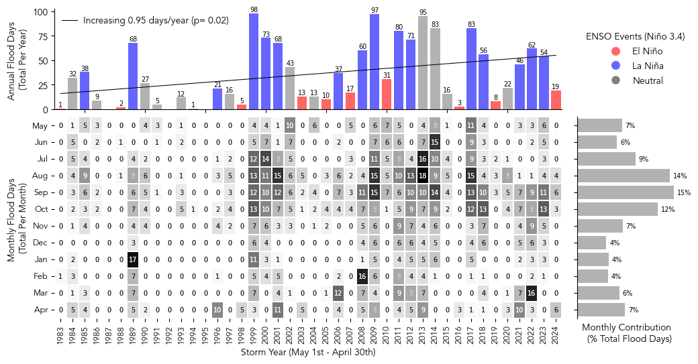
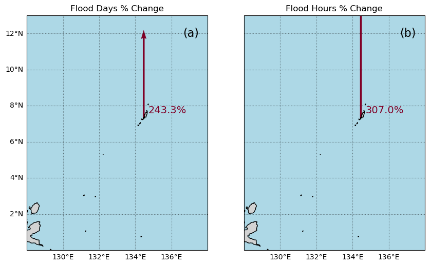

# Standard libraries
import os
import os.path as op
import datetime
from pathlib import Path
import sys
# Data manipulation libraries
import numpy as np
import pandas as pd
import xarray as xr
# Data analysis libraries
import scipy.stats as stats
# Visualization libraries
import matplotlib.pyplot as plt
import seaborn as sns
import cartopy.crs as ccrs
import cartopy.feature as cfeature
from matplotlib.colors import Normalize
from urllib.request import urlretrieve #used for downloading files
# Miscellaneous
from myst_nb import glue # used for figure numbering when exporting to LaTeX
sys.path.append("../../../functions")
from data_downloaders import download_oni_index
---------------------------------------------------------------------------
ModuleNotFoundError Traceback (most recent call last)
Cell In[1], line 29
26 from myst_nb import glue # used for figure numbering when exporting to LaTeX
28 sys.path.append("../../../functions")
---> 29 from data_downloaders import download_oni_index
ModuleNotFoundError: No module named 'data_downloaders'
data_dir = Path('../../../data')
path_figs = "../../../matrix_cc/figures"
data_dir = Path(data_dir,'sea_level')
#CHANGE THIS TO YOUR PATH!!
output_dir = Path('/Users/laurac/Library/Mobile Documents/com~apple~CloudDocs/Projects/CC_indicators/CC_indicators/data/') # EDIT THIS TO YOUR PATH
# Create the output directory if it does not exist
output_dir.mkdir(exist_ok=True)
data_dir.mkdir(exist_ok=True)
uhslc_id = 7
# download the hourly data
fname = f'h{uhslc_id:03}.nc' # h for hourly, d for daily
url = "https://uhslc.soest.hawaii.edu/data/netcdf/fast/hourly/"
path = os.path.join(data_dir, fname)
if not os.path.exists(path):
urlretrieve(os.path.join(url, fname), path)
rsl = xr.open_dataset(data_dir / fname)
# remove the trailing zero from record_id. This zero is added to the record_id to make it unique if the station has multiple entries
rsl['record_id'] =(rsl['record_id']/10).astype(int)
rsl
<xarray.Dataset> Size: 6MB
Dimensions: (record_id: 1, time: 486849)
Coordinates:
* time (time) datetime64[ns] 4MB 1969-05-18T15:00:00 ... 2...
* record_id (record_id) int64 8B 7
Data variables:
sea_level (record_id, time) float32 2MB ...
lat (record_id) float32 4B ...
lon (record_id) float32 4B ...
station_name (record_id) |S7 7B ...
station_country (record_id) |S5 5B ...
station_country_code (record_id) float32 4B ...
uhslc_id (record_id) int16 2B ...
gloss_id (record_id) float32 4B ...
ssc_id (record_id) |S4 4B ...
last_rq_date (record_id) datetime64[ns] 8B ...
Attributes:
title: UHSLC Fast Delivery Tide Gauge Data (hourly)
ncei_template_version: NCEI_NetCDF_TimeSeries_Orthogonal_Template_v2.0
featureType: timeSeries
Conventions: CF-1.6, ACDD-1.3
date_created: 2025-01-27T14:35:24Z
publisher_name: University of Hawaii Sea Level Center (UHSLC)
publisher_email: philiprt@hawaii.edu, markm@soest.hawaii.edu
publisher_url: http://uhslc.soest.hawaii.edu
summary: The UHSLC assembles and distributes the Fast Deli...
processing_level: Fast Delivery (FD) data undergo a level 1 quality...
acknowledgment: The UHSLC Fast Delivery database is supported by ...Show code cell source
station = rsl['station_name'].values[0].decode('utf-8')
country = rsl['station_country'].values[0].decode('utf-8')
startDateTime = str(rsl.time.values[0])[:10]
endDateTime = str(rsl.time.values[-1])[:10]
station_name = station + ', ' + country
glue("station",station,display=False)
glue("country",country, display=False)
glue("startDateTime",startDateTime, display=False)
glue("endDateTime",endDateTime, display=False)
def get_MHHW_uhslc_datums(id, datumname):
url = 'https://uhslc.soest.hawaii.edu/stations/TIDES_DATUMS/fd/LST/fd'+f'{int(id):03}'+'/datumTable_'+f'{int(id):03}'+'_mm_GMT.csv'
datumtable = pd.read_csv(url)
datum = datumtable[datumtable['Name'] == datumname]['Value'].values[0]
# ensure datum is a float
datum = float(datum)
return datum, datumtable
# extract the given datum from the dataframe
datumname = 'MHHW'
datum, datumtable = get_MHHW_uhslc_datums(uhslc_id, datumname)
rsl['datum'] = datum # already in mm
rsl['sea_level_mhhw'] = rsl['sea_level'] - rsl['datum']
# assign units to datum and sea level
rsl['datum'].attrs['units'] = 'mm'
rsl['sea_level_mhhw'].attrs['units'] = 'mm'
glue("datum", datum, display=False)
glue("datumname", datumname, display=False)
datumtable
Show code cell output
| Name | Value | Description | |
|---|---|---|---|
| 0 | Status | 27-Nov-2024 | Processing Date |
| 1 | Epoch | 01-Jan-1983 to 31-Dec-2001 | Tidal Datum Analysis Period |
| 2 | MHHW | 2162 | Mean Higher-High Water (mm) |
| 3 | MHW | 2087 | Mean High Water (mm) |
| 4 | MTL | 1530 | Mean Tide Level (mm) |
| 5 | MSL | 1532 | Mean Sea Level (mm) |
| 6 | DTL | 1458 | Mean Diurnal Tide Level (mm) |
| 7 | MLW | 974 | Mean Low Water (mm) |
| 8 | MLLW | 753 | Mean Lower-Low Water (mm) |
| 9 | STND | 0 | Station Datum (mm) |
| 10 | GT | 1409 | Great Diurnal Range (mm) |
| 11 | MN | 1114 | Mean Range of Tide (mm) |
| 12 | DHQ | 75 | Mean Diurnal High Water Inequality (mm) |
| 13 | DLQ | 220 | Mean Diurnal Low Water Inequality (mm) |
| 14 | HWI | Unavailable | Greenwich High Water Interval (in hours) |
| 15 | LWI | Unavailable | Greenwich Low Water Interval (in hours) |
| 16 | Maximum | 2785 | Highest Observed Water Level (mm) |
| 17 | Max Time | 23-Jun-2013 22 | Highest Observed Water Level Date and Hour (GMT) |
| 18 | Minimum | -34 | Lowest Observed Water Level (mm) |
| 19 | Min Time | 19-Jan-1992 16 | Lowest Observed Water Level Date and Hour (GMT) |
| 20 | HAT | 2567 | Highest Astronomical Tide (mm) |
| 21 | HAT Time | 27-Aug-1988 22 | HAT Date and Hour (GMT) |
| 22 | LAT | 175 | Lowest Astronomical Tide (mm) |
| 23 | LAT Time | 31-Dec-1986 16 | LAT Date and Hour (GMT) |
| 24 | LEV | 1644 | Switch 1 (mm) |
| 25 | LEVB | 1541 | Switch 2 (mm) |
fig, ax = plt.subplots(sharex=True)
fig.autofmt_xdate()
ax.plot(rsl.time.values,rsl.sea_level_mhhw.T.values/10)
ax.set_ylabel(f'Sea Level (cm, {datumname})') #divide by 10 to convert to cm
glue("TS_full_fig",fig,display=False)
Show code cell output

#get epoch start time from the epoch in the datumtable
epoch_times = datumtable[datumtable['Name'] == 'Epoch']['Value'].values[0]
#parse epoch times into start time
epoch_start = epoch_times.split(' ')[0]
epoch_start = datetime.datetime.strptime(epoch_start, '%d-%b-%Y')
# and for now, end time the processind end time
epoch_end = epoch_times.split(' ')[2]
epoch_end = datetime.datetime.strptime(epoch_end, '%d-%b-%Y')
# last date is rsl['last_rq_date'].values
data_end = rsl['time'].values[-1]
data_end = pd.to_datetime(data_end)
# start the data at year before epoch_start year on May 1st
data_start = pd.Timestamp(year=epoch_start.year-1, month=5, day=1)
data_start = pd.to_datetime(data_start)
# end the data at April 30th of the year of the last data request
data_end = pd.Timestamp(year=data_end.year, month=4, day=30)
data_end = pd.to_datetime(data_end)
hourly_data = rsl.sel(dict(time=slice(data_start, data_end)))
hourly_data
glue("startDataDateTime",data_start.strftime('%Y-%m-%d'), display=False)
glue("endDataDateTime",data_end.strftime('%Y-%m-%d'), display=False)
glue("startEpochDateTime",epoch_start.strftime('%Y-%m-%d'), display=False)
glue("endEpochDateTime",epoch_end.strftime('%Y-%m-%d'), display=False)
fig, ax = plt.subplots(sharex=True)
fig.autofmt_xdate()
ax.plot(hourly_data.time.values,hourly_data.sea_level_mhhw.T.values/10) #divide by 10 to convert to cm
ax.set_ylabel(f'Sea Level (cm, {datumname})')
glue("TS_epoch_fig",fig,display=False)
Show code cell output

threshold = 30 # in cm
glue("threshold",threshold,display=False)
# Resample the hourly data to daily maximum sea level
SL_daily_max = hourly_data.resample(time='D').max()
static_vars = hourly_data[['station_name', 'station_country','station_country_code', 'datum','lat', 'lon','uhslc_id','gloss_id','ssc_id','last_rq_date']]
SL_daily_max = SL_daily_max.assign(static_vars)
SL_daily_max
<xarray.Dataset> Size: 307kB
Dimensions: (time: 15341, record_id: 1)
Coordinates:
* record_id (record_id) int64 8B 7
* time (time) datetime64[ns] 123kB 1982-05-01 ... 2024-04-30
Data variables:
sea_level (time, record_id) float32 61kB 1.881e+03 ... 2.161e+03
lat (record_id) float32 4B 7.33
lon (record_id) float32 4B 134.5
station_name (record_id) |S7 7B b'Malakal'
station_country (record_id) |S5 5B b'Palau'
station_country_code (record_id) float32 4B 585.0
uhslc_id (record_id) int16 2B 7
gloss_id (record_id) float32 4B 120.0
ssc_id (record_id) |S4 4B b'mala'
last_rq_date (record_id) datetime64[ns] 8B 2018-12-31T22:59:59.9...
datum float64 8B 2.162e+03
sea_level_mhhw (time, record_id) float64 123kB -281.0 -163.0 ... -1.0
Attributes:
title: UHSLC Fast Delivery Tide Gauge Data (hourly)
ncei_template_version: NCEI_NetCDF_TimeSeries_Orthogonal_Template_v2.0
featureType: timeSeries
Conventions: CF-1.6, ACDD-1.3
date_created: 2025-01-27T14:35:24Z
publisher_name: University of Hawaii Sea Level Center (UHSLC)
publisher_email: philiprt@hawaii.edu, markm@soest.hawaii.edu
publisher_url: http://uhslc.soest.hawaii.edu
summary: The UHSLC assembles and distributes the Fast Deli...
processing_level: Fast Delivery (FD) data undergo a level 1 quality...
acknowledgment: The UHSLC Fast Delivery database is supported by ...# make a new figure that is 15 x 5
fig, ax = plt.subplots(sharex=True)
plt.plot(SL_daily_max.time.values, SL_daily_max.sea_level_mhhw.values/10)
plt.xlabel('Date (Calendar Year)')
plt.ylabel('Sea Level (cm)')
plt.title('Sea Level Daily Maximum Time Series')
Text(0.5, 1.0, 'Sea Level Daily Maximum Time Series')
# Make a pdf of the data with 95th percentile threshold
sea_level_data_cm = hourly_data['sea_level_mhhw'].values/10 # convert to cm
#remove nans
sea_level_data_cm = sea_level_data_cm[~np.isnan(sea_level_data_cm)]
fig, ax = plt.subplots(figsize=(4,2))
ax.hist(sea_level_data_cm, bins=100, density=True, label='Sea Level Data')
#get 95th percentile
threshold98 = np.percentile(sea_level_data_cm, 98)
ax.axvline(threshold, color='r', linestyle='--', label='Threshold: {:.4f} cm'.format(threshold))
ax.axvline(threshold98, color='c', linestyle='--', label='Threshold: {:.4f} cm'.format(threshold98))
ax.set_xlabel('Sea Level (cm)')
ax.set_ylabel('Probability Density')
# make the title two lines
ax.set_title('Sea Level Histogram\nwith 98th Percentile Threshold')
# add label to dashed line
# get value of middle of y-axis for label placement
ymin, ymax = ax.get_ylim()
yrange = ymax - ymin
y_middle = ymin + 0.75*yrange
ax.text(threshold+4, y_middle, '{:.1f} cm'.format(threshold), rotation=90, va='center', ha='left', color='r')
ax.text(threshold98, y_middle, '{:.1f} cm'.format(threshold98), rotation=90, va='center', ha='right', color='c')
glue("histogram_fig", fig, display=False)
Show code cell output

# Find all days where sea level exceeds the threshold
flood_days_df = SL_daily_max.to_dataframe().reset_index()
flood_days_df['year_storm'] = flood_days_df['time'].dt.year
flood_days_df.loc[flood_days_df['time'].dt.month > 4, 'year_storm'] = flood_days_df['time'].dt.year + 1
#filter flood hours
flood_days_df = flood_days_df[flood_days_df['sea_level_mhhw'] > threshold*10]
flood_days_per_year = flood_days_df.groupby('year_storm').size().reset_index(name='flood_days_count')
all_years = pd.DataFrame({'year_storm': range(flood_days_df['year_storm'].min(), flood_days_df['year_storm'].max() + 1)})
flood_days_per_year = all_years.merge(flood_days_per_year, on='year_storm', how='left').fillna(0)
flood_days_per_year['flood_days_count'] = flood_days_per_year['flood_days_count'].astype(int)
flood_hours_df = hourly_data.to_dataframe().reset_index()
flood_hours_df['year_storm'] = flood_hours_df['time'].dt.year
flood_hours_df.loc[flood_hours_df['time'].dt.month > 4, 'year_storm'] = flood_hours_df['time'].dt.year + 1
#filter flood hours
flood_hours_df = flood_hours_df[flood_hours_df['sea_level_mhhw'] > threshold*10]
flood_hours_per_year = flood_hours_df.groupby('year_storm').size().reset_index(name='flood_hours_count')
all_years = pd.DataFrame({'year_storm': range(flood_hours_df['year_storm'].min(), flood_hours_df['year_storm'].max() + 1)})
flood_hours_per_year = all_years.merge(flood_hours_per_year, on='year_storm', how='left').fillna(0)
flood_hours_per_year['flood_hours_count'] = flood_hours_per_year['flood_hours_count'].astype(int)
# show the first few rows of the flood_days_per_year dataframe
flood_days_per_year.head()
| year_storm | flood_days_count | |
|---|---|---|
| 0 | 1983 | 1 |
| 1 | 1984 | 32 |
| 2 | 1985 | 38 |
| 3 | 1986 | 9 |
| 4 | 1987 | 0 |
# add nino
p_data = 'https://psl.noaa.gov/data/correlation/oni.data'
oni = download_oni_index(p_data)
/Users/laurac/Library/Mobile Documents/com~apple~CloudDocs/Projects/CC_indicators/CC_indicators/notebooks_historical/ocean/1_sea_level/../../../functions/data_downloaders.py:242: FutureWarning: The 'delim_whitespace' keyword in pd.read_csv is deprecated and will be removed in a future version. Use ``sep='\s+'`` instead
oni = pd.read_csv(
# add column for oni values to flood_days_per_year, with average ONI value for the storm year
# first establish storm year for each , given that the date is the index
oni['year_storm'] = oni.index.year
# if the month is less than 5, then the storm year is the year before
oni.loc[oni.index.month > 4, 'year_storm'] = oni.loc[oni.index.month > 4, 'year_storm'] + 1
# group by storm year and get the mean ONI value
oni_year = oni.groupby('year_storm').mean()
# merge the oni values with the flood_days_per_year dataframe
flood_days_per_year = flood_days_per_year.merge(oni_year, on='year_storm', how='left')
def detect_enso_events(oni_df):
"""
Detects El Niño and La Niña events within a storm year based on the ONI index.
An El Niño event is defined as having 5 consecutive months with ONI > 0.5.
A La Niña event is defined as having 5 consecutive months with ONI < -0.5.
Parameters:
oni_df (pd.DataFrame): DataFrame containing the ONI index with a datetime index.
Returns:
pd.DataFrame: DataFrame with columns 'year_storm' and 'event' indicating the type of event ('El Niño', 'La Niña', or 'Neutral').
"""
oni_df['event'] = 'Neutral'
oni_df['year_storm'] = oni_df.index.year
oni_df.loc[oni_df.index.month > 4, 'year_storm'] += 1
for year in oni_df['year_storm'].unique():
yearly_data = oni_df[oni_df['year_storm'] == year]['ONI']
for i in range(len(yearly_data) - 4):
if all(yearly_data.iloc[i:i+5] > 0.5):
oni_df.loc[oni_df['year_storm'] == year, 'event'] = 'El Niño'
break
elif all(yearly_data.iloc[i:i+5] < -0.5):
oni_df.loc[oni_df['year_storm'] == year, 'event'] = 'La Niña'
break
return oni_df[['year_storm', 'event']].drop_duplicates().reset_index(drop=True)
# Example usage:
# oni_df = download_oni_index(p_data) # Assuming this function is already defined and returns a DataFrame with ONI index
enso_events = detect_enso_events(oni)
# show the first few rows of the enso_events dataframe
enso_events.head()
| year_storm | event | |
|---|---|---|
| 0 | 1951 | Neutral |
| 1 | 1952 | El Niño |
| 2 | 1953 | Neutral |
| 3 | 1954 | El Niño |
| 4 | 1955 | La Niña |
# add enso events to flood_days_per_year
flood_days_per_year = flood_days_per_year.merge(enso_events, on='year_storm', how='left')
flood_days_per_year.head()
| year_storm | flood_days_count | ONI | event | |
|---|---|---|---|---|
| 0 | 1983 | 1 | 1.510833 | El Niño |
| 1 | 1984 | 32 | -0.246667 | Neutral |
| 2 | 1985 | 38 | -0.643333 | La Niña |
| 3 | 1986 | 9 | -0.434167 | Neutral |
| 4 | 1987 | 0 | 0.745000 | El Niño |
# Create two subplots sharing the same x-axis
fig, (ax1, ax2) = plt.subplots(
2, 1, figsize=(10, 4), sharex=True, gridspec_kw={"height_ratios": [5, 1],"hspace": 0.04, }
)
# Plot the bar chart for flood days on the first subplot
x_values = flood_days_per_year['year_storm'] # Assuming this is already aligned to storm years
x_values_offset = x_values - 4/12 # Shift x-values to align with the storm years
y_values = flood_days_per_year['flood_days_count']
bar_width = 0.9
flooding_colors = sns.color_palette("Blues", as_cmap=True)
norm = Normalize(vmin=min(y_values), vmax=max(y_values))
colors = flooding_colors(norm(y_values))
ax1.bar(x_values_offset, y_values, width=bar_width, color=colors, align='edge')
ax1.set_ylabel('Number of Flood Days')
ax1.set_title('Flood Days Per Year')
ax1.grid(color='lightgray', linestyle='-', linewidth=0.5, alpha=0.5)
# Plot the ONI index on the second subplot
oni['year_float'] = oni.index.year + (oni.index.month - 1) / 12
# shifted x-axis to align with flood days histogram storm years
# x_offset = flood_days_per_year['year_storm'].min() + 4/12
ax2.plot(oni['year_float'], oni['ONI'], color='k',linewidth=0.5, label='ONI')
ax2.set_ylabel('ONI')
ax2.set_xlabel('Storm Year (May 1st - April 30th)')
ax2.grid(color='lightgray', linestyle='-', linewidth=0.5, alpha=0.5)
ax2.set_ylim(-3, 3)
ax1.set_xlim(x_values_offset.min()-bar_width, x_values.max()+bar_width)
ax2.set_xlim(x_values_offset.min()-bar_width, x_values.max()+bar_width)
# Define thresholds for ONI values
el_nino_threshold = 0.5
la_nina_threshold = -0.5
# Loop through the data to plot segments with different colors
for i in range(len(oni) - 1):
x = oni['year_float'].iloc[i:i+2]
y = oni['ONI'].iloc[i:i+2]
if y.mean() >= el_nino_threshold:
color = 'red'
elif y.mean() <= la_nina_threshold:
color = 'blue'
else:
color = 'gray'
ax2.plot(x, y, color=color, linewidth=1.5, alpha=0.5)
# put y-axis labels on the right side for ax2
ax2.yaxis.tick_right()
# set font size for tick labels
ax2.tick_params(axis='both', which='major', labelsize=8)
# Add the trendline to the first subplot
# Aggregating data and fitting the trendline
slope, intercept, r_value, p_value, std_err = stats.linregress(x_values_offset+0.5, y_values)
trendDays = intercept + slope * (x_values_offset+0.5)
trendLabel = 'Increasing {:.2f} days/year (p= {:.2f})'.format(slope,p_value)
if p_value < 0.05:
linestyleTrend = '-'
else:
linestyleTrend = '--'
ax1.plot(x_values_offset+0.5, trendDays, color='black', linestyle=linestyleTrend, label=trendLabel)
# Adding the legend
ax1.legend(loc='upper left', fontsize='small')
# # save the trendline values
glue("day_per_year_trend",slope,display=False)
glue("p_value_days",p_value,display=False)
# # save the figure
glue("fig-threshold_counts_enso", fig, display=False)
# save to output directory
fig.savefig(output_dir / "SL_FloodFrequency_threshold_counts_days.png", dpi=300, bbox_inches='tight')

x_values = flood_days_per_year['year_storm'] # Assuming this is already aligned to storm years
y_values = flood_days_per_year['flood_days_count']
bar_width = 0.9 # Adjust the width of the bars
# Offset x-values by 4/12 (4 months = May start)
x_values_offset = x_values - 4/12
# Plot the bar chart
fig, ax = plt.subplots(figsize=(10, 4))
ax.bar(x_values_offset, y_values, width=bar_width, color=colors, align='edge')
# Add gridlines for better readability
ax.grid(color='lightgray', linestyle='-', linewidth=0.5, alpha=0.5)
# Add labels and title
ax.set_xlabel('Storm Year (May 1st - April 30th)')
ax.set_ylabel('Number of Flood Days')
ax.set_title('Flood Days Per Year')
# Adjust x-ticks to match storm years
ax.set_xticks(x_values[::5]) # Use storm years for ticks, spaced every 5 years
ax.set_xticklabels(x_values[::5].astype(int), rotation=45)
# Set x-limits to ensure all bars are visible
ax.set_xlim(x_values_offset.min() - bar_width, x_values_offset.max())
# Show the plot
plt.tight_layout()
plt.show()

# Adjusting the heatmap palette to improve readability
from matplotlib.colors import Normalize
adjusted_heatmap_palette = sns.color_palette("YlOrRd", as_cmap=True)
# Plot the bar chart
fig, ax = plt.subplots(figsize=(10, 4))
# Adding a light gray grid
ax.grid(color='lightgray', linestyle='-', linewidth=0.5)
y_values = flood_hours_per_year['flood_hours_count']
x_values = flood_hours_per_year['year_storm']
bar_width = 0.9
norm = Normalize(vmin=min(y_values), vmax=max(y_values))
colors = adjusted_heatmap_palette(norm(y_values))
# Offset x-values by 4/12 (4 months = May start)
x_values_offset = x_values - 4/12
ax.bar(x_values_offset, y_values, width=bar_width, color=colors, align='edge')
ax.set_xlabel('Storm Year')
ax.set_ylabel('Number of Flood Hours')
ax.set_title('Number of Flood Hours Per Year')
slope, intercept, r_value, p_value, std_err = stats.linregress(x_values_offset+0.5, y_values)
trendHours = intercept + slope * (x_values_offset+0.5)
trendLabel = 'Increasing {:.2f} hours/year\n(p= {:.2f})'.format(slope, p_value)
if p_value < 0.05:
linestyleTrend = '-'
else:
linestyleTrend = '--'
ax.plot(x_values_offset+0.5, trendHours, color='black', linestyle=linestyleTrend, label=trendLabel)
# Adding the legend
ax.legend(loc='upper left', fontsize='small')
# # save the trendline values
# glue("hours_per_year_trend",slope,display=False)
# glue("p_value_hours",p_value,display=False)
# Adding the legend
ax.legend(loc='upper left')
# glue("duration_fig", fig, display=False)
# save the figure
fig.savefig(output_dir / 'SL_FloodFrequency_threshold_counts_hours.png', bbox_inches='tight')
Show code cell output

# Calculate the total number of days/hours exceeding the threshold
total_flood_days = flood_days_per_year['flood_days_count'].sum()
total_flood_hours = flood_hours_per_year['flood_hours_count'].sum()
# Calculate the average number of flood days and hours per year
average_flood_days_per_year = total_flood_days / len(flood_days_per_year)
average_flood_hours_per_year = flood_hours_per_year['flood_hours_count'].mean()
# Find the maximum number of flood days in a single year
max_flood_days = flood_days_per_year['flood_days_count'].max()
max_flood_days_year = flood_days_per_year.loc[flood_days_per_year['flood_days_count'].idxmax(), 'year_storm']
# Find the maximum number of flood hours in a single year
max_flood_hours = flood_hours_per_year['flood_hours_count'].max()
max_flood_hours_year = flood_hours_per_year.loc[flood_hours_per_year['flood_hours_count'].idxmax(), 'year_storm']
# calculate the absolute percent change over the entire period using the first and last part of the trend
percent_change_days = (trendDays.iloc[-1]-trendDays.iloc[0])/trendDays.iloc[0]*100
percent_change_hours = (trendHours.iloc[-1]-trendHours.iloc[0])/trendHours.iloc[0]*100
# Create a dataframe for statistics
summary_stats = [
('Total Flood Days', int(total_flood_days)),
('Average Flood Days per Year', int(average_flood_days_per_year)),
('Max Flood Days in a Single Year', int(max_flood_days)),
('Year of Max Flood Days', int(max_flood_days_year)),
('Total Flood Hours', int(total_flood_hours)),
('Average Flood Hours per Year', int(average_flood_hours_per_year)),
('Max Flood Hours in a Single Year', int(max_flood_hours)),
('Year of Max Flood Hours', int(max_flood_hours_year)),
('Percent Change in Flood Days', int(percent_change_days)),
('Percent Change in Flood Hours', int(percent_change_hours))
]
# Convert the list of tuples to a pandas DataFrame
summary_stats_df = pd.DataFrame(summary_stats, columns=['Statistic', 'Value'])
# Display the DataFrame
summary_stats_df
| Statistic | Value | |
|---|---|---|
| 0 | Total Flood Days | 1495 |
| 1 | Average Flood Days per Year | 35 |
| 2 | Max Flood Days in a Single Year | 98 |
| 3 | Year of Max Flood Days | 1999 |
| 4 | Total Flood Hours | 3249 |
| 5 | Average Flood Hours per Year | 77 |
| 6 | Max Flood Hours in a Single Year | 217 |
| 7 | Year of Max Flood Hours | 1999 |
| 8 | Percent Change in Flood Days | 243 |
| 9 | Percent Change in Flood Hours | 307 |
Show code cell source
import calendar
# Make a dataframe with years as rows and months as columns
df = SL_daily_max.to_dataframe().reset_index()
df['flood_day'] = df['sea_level_mhhw'] > threshold*10
# keep only the flood day and time columns
df = df[['time', 'flood_day']]
df['year'] = df['time'].dt.year
df['month'] = df['time'].dt.month
# adjust for storm year
df.loc[df['month'] > 4, 'year'] = df.loc[df['month'] > 4, 'year'] + 1
# drop original time column
df = df.drop(columns=['time'])
# sum the number of flood days in each month for each storm year
df = df.groupby(['year', 'month']).sum()
# pivot the table
df = df.pivot_table(index='year', columns='month', values='flood_day')
# remove first and last rows (partial years)
# df = df.iloc[1:-1]
# rename year to Storm Year
df.index.name = 'Storm Year'
#define reordered months (for storm year, May to April)
month_order = [5,6,7,8,9,10,11,12,1,2,3,4]
month_names = [calendar.month_abbr[i] for i in month_order]
# rename months to month names
df = df[month_order]
df.columns = month_names
# add a column for the total number of flood days in each year
df['Annual'] = df.sum(axis=1)
# add a row for the total number of flood days in each month, normalized the total flood days (last row, last column)
df.loc['Monthly Total (%)'] = df.sum()
df.loc['Monthly Total (%)'] = 100*df.loc['Monthly Total (%)']/df.loc['Monthly Total (%)', 'Annual']
station_name = SL_daily_max['station_name'].values[0].decode('utf-8') +', ' + SL_daily_max['station_country'].values[0].decode('utf-8')
tableTitle = station_name + ': Days Exceeding ' + str(threshold) + ' cm above MHHW'
# Apply background gradient and add a title with larger text
styled_df = df.style.background_gradient(
cmap='Purples', axis=None, subset=(df.index[:-1], df.columns[:-1])
).format("{:.0f}").background_gradient(
cmap='Grays', axis=None, subset=(df.index[-1], df.columns[:-1])
).format("{:.0f}").set_caption(tableTitle).set_table_styles([
{
'selector': 'caption',
'props': [('font-size', '16px'), ('margin-bottom', '10px')]
}
])
styled_df
| May | Jun | Jul | Aug | Sep | Oct | Nov | Dec | Jan | Feb | Mar | Apr | Annual | |
|---|---|---|---|---|---|---|---|---|---|---|---|---|---|
| Storm Year | |||||||||||||
| 1983 | 0 | 0 | 0 | 0 | 0 | 0 | 0 | 0 | 0 | 1 | 0 | 0 | 1 |
| 1984 | 1 | 5 | 5 | 4 | 3 | 2 | 1 | 0 | 2 | 3 | 1 | 5 | 32 |
| 1985 | 5 | 0 | 4 | 9 | 6 | 3 | 4 | 0 | 0 | 0 | 3 | 4 | 38 |
| 1986 | 3 | 2 | 0 | 0 | 2 | 2 | 0 | 0 | 0 | 0 | 0 | 0 | 9 |
| 1987 | 0 | 0 | 0 | 0 | 0 | 0 | 0 | 0 | 0 | 0 | 0 | 0 | 0 |
| 1988 | 0 | 1 | 0 | 1 | 0 | 0 | 0 | 0 | 0 | 0 | 0 | 0 | 2 |
| 1989 | 0 | 0 | 4 | 8 | 6 | 7 | 4 | 3 | 17 | 7 | 7 | 5 | 68 |
| 1990 | 4 | 0 | 2 | 6 | 5 | 4 | 4 | 0 | 0 | 0 | 0 | 2 | 27 |
| 1991 | 3 | 1 | 0 | 0 | 1 | 0 | 0 | 0 | 0 | 0 | 0 | 0 | 5 |
| 1992 | 0 | 0 | 0 | 0 | 0 | 0 | 0 | 0 | 0 | 0 | 0 | 0 | 0 |
| 1993 | 1 | 2 | 0 | 1 | 3 | 5 | 0 | 0 | 0 | 0 | 0 | 0 | 12 |
| 1994 | 0 | 0 | 0 | 0 | 0 | 1 | 0 | 0 | 0 | 0 | 0 | 0 | 1 |
| 1995 | 0 | 0 | 0 | 0 | 0 | 0 | 0 | 0 | 0 | 0 | 0 | 0 | 0 |
| 1996 | 0 | 0 | 1 | 3 | 0 | 2 | 4 | 0 | 0 | 1 | 0 | 10 | 21 |
| 1997 | 0 | 0 | 2 | 5 | 3 | 4 | 2 | 0 | 0 | 0 | 0 | 0 | 16 |
| 1998 | 0 | 0 | 0 | 0 | 0 | 0 | 0 | 0 | 0 | 0 | 0 | 5 | 5 |
| 1999 | 4 | 5 | 12 | 13 | 12 | 13 | 7 | 6 | 11 | 5 | 7 | 3 | 98 |
| 2000 | 4 | 7 | 14 | 11 | 10 | 10 | 6 | 4 | 3 | 4 | 0 | 0 | 73 |
| 2001 | 1 | 1 | 8 | 15 | 12 | 7 | 3 | 0 | 1 | 5 | 4 | 11 | 68 |
| 2002 | 10 | 7 | 5 | 6 | 6 | 5 | 3 | 0 | 0 | 0 | 1 | 0 | 43 |
| 2003 | 0 | 0 | 0 | 5 | 2 | 1 | 0 | 0 | 0 | 0 | 0 | 5 | 13 |
| 2004 | 6 | 0 | 0 | 0 | 4 | 2 | 1 | 0 | 0 | 0 | 0 | 0 | 13 |
| 2005 | 0 | 0 | 0 | 3 | 0 | 4 | 2 | 0 | 0 | 0 | 1 | 0 | 10 |
| 2006 | 0 | 2 | 0 | 6 | 7 | 4 | 0 | 0 | 0 | 2 | 12 | 4 | 37 |
| 2007 | 5 | 0 | 3 | 2 | 3 | 4 | 0 | 0 | 0 | 0 | 0 | 0 | 17 |
| 2008 | 0 | 0 | 0 | 4 | 11 | 7 | 5 | 4 | 1 | 16 | 7 | 5 | 60 |
| 2009 | 6 | 7 | 11 | 15 | 15 | 8 | 6 | 6 | 5 | 6 | 4 | 8 | 97 |
| 2010 | 7 | 6 | 5 | 5 | 7 | 1 | 0 | 0 | 0 | 0 | 0 | 0 | 31 |
| 2011 | 5 | 6 | 8 | 10 | 6 | 5 | 9 | 6 | 4 | 8 | 9 | 4 | 80 |
| 2012 | 0 | 0 | 4 | 13 | 10 | 9 | 7 | 6 | 5 | 4 | 8 | 5 | 71 |
| 2013 | 4 | 7 | 16 | 18 | 10 | 7 | 4 | 4 | 5 | 4 | 7 | 9 | 95 |
| 2014 | 8 | 15 | 10 | 9 | 14 | 9 | 6 | 5 | 6 | 1 | 0 | 0 | 83 |
| 2015 | 1 | 0 | 4 | 5 | 4 | 2 | 0 | 0 | 0 | 0 | 0 | 0 | 16 |
| 2016 | 0 | 0 | 0 | 0 | 0 | 0 | 0 | 0 | 0 | 0 | 0 | 3 | 3 |
| 2017 | 11 | 9 | 9 | 15 | 13 | 12 | 3 | 4 | 5 | 1 | 0 | 1 | 83 |
| 2018 | 4 | 3 | 3 | 4 | 10 | 13 | 7 | 6 | 0 | 1 | 4 | 1 | 56 |
| 2019 | 0 | 0 | 2 | 3 | 3 | 0 | 0 | 0 | 0 | 0 | 0 | 0 | 8 |
| 2020 | 0 | 0 | 1 | 8 | 5 | 4 | 0 | 0 | 0 | 0 | 1 | 3 | 22 |
| 2021 | 3 | 0 | 0 | 1 | 7 | 7 | 4 | 5 | 2 | 0 | 7 | 10 | 46 |
| 2022 | 3 | 2 | 0 | 1 | 9 | 8 | 9 | 6 | 3 | 2 | 16 | 3 | 62 |
| 2023 | 6 | 5 | 3 | 4 | 11 | 13 | 5 | 3 | 3 | 1 | 0 | 0 | 54 |
| 2024 | 0 | 0 | 0 | 4 | 6 | 3 | 0 | 0 | 0 | 0 | 0 | 6 | 19 |
| Monthly Total (%) | 7 | 6 | 9 | 15 | 15 | 13 | 7 | 5 | 5 | 5 | 7 | 7 | 100 |
Show code cell source
#make a pretty pdf of the table with great_tables
from great_tables import GT,html
dfGT = df.copy()
dfGT['Storm Year'] = df.index
# put the year column first
cols = dfGT.columns.tolist()
cols = cols[-1:] + cols[:-1]
dfGT = dfGT[cols]
dfGT.reset_index(drop=True, inplace=True)
# Create a GreatTable object
table = (GT(dfGT)
.fmt_number(columns=calendar.month_abbr[1:13], decimals=0)
.fmt_number(columns=['Annual'], decimals=0)
.tab_header(title = 'Days Exceeding 30 cm above MHHW', subtitle = station_name)
.data_color(domain = [0,20],
columns=calendar.month_abbr[1:13],
rows = list(range(len(dfGT)-1)),
palette=["white", "lightblue"])
.data_color(domain = [0,20],
columns=calendar.month_abbr[1:13],
rows = [-1],
palette=["white", "purple"])
.opt_table_outline(style='solid', width='3px', color='white')
)
# save table as png
tableName = station_name + '_flood_days_intra_annual.png'
savePath = os.path.join(output_dir, tableName)
# set size of table
# replace any commas or spaces with underscores
# savePath = savePath.replace(' ', '_')
table.save(savePath)
# Load Image
from IPython.display import Image
imgTable = Image(filename=savePath)
# Glue the image with a name
glue("imgTable", imgTable, display=False)
# Define the decades for analysis
decades = [(1983, 1993), (1993, 2003), (2003, 2013), (2013, 2023)]
# Initialize lists to store results
total_flood_days_list = []
average_flood_days_per_year_list = []
percent_increase_days_per_year_list = [0] # First decade has no previous data for comparison
# Calculate statistics for each decade
for i, (start_year, end_year) in enumerate(decades):
# Filter the dataframe for the current decade
flood_days_decade = flood_days_per_year[(flood_days_per_year['year_storm'] >= start_year) & (flood_days_per_year['year_storm'] <= end_year)]
sum_flood_days_decade = flood_days_decade['flood_days_count'].sum()
avg_flood_days_decade = sum_flood_days_decade / len(flood_days_decade)
# Append results to lists
total_flood_days_list.append(sum_flood_days_decade)
average_flood_days_per_year_list.append(np.round(avg_flood_days_decade,0))
# Calculate percent increase for subsequent decades
if i > 0:
prev_avg_flood_days = average_flood_days_per_year_list[0]
percent_increase = np.round((avg_flood_days_decade - prev_avg_flood_days) / prev_avg_flood_days * 100, 1)
percent_increase_days_per_year_list.append(percent_increase)
# Create a dataframe for decadal statistics
decadal_stats = pd.DataFrame({
'decade': ['1983-1993', '1993-2003', '2003-2013', '2013-2023'],
'total_flood_days': total_flood_days_list,
'average_flood_days_per_year': average_flood_days_per_year_list,
'percent_increase_days_per_year': percent_increase_days_per_year_list
})
decadal_stats
| decade | total_flood_days | average_flood_days_per_year | percent_increase_days_per_year | |
|---|---|---|---|---|
| 0 | 1983-1993 | 194 | 18.0 | 0.0 |
| 1 | 1993-2003 | 350 | 32.0 | 76.8 |
| 2 | 2003-2013 | 524 | 48.0 | 164.6 |
| 3 | 2013-2023 | 528 | 48.0 | 166.7 |
import matplotlib.pyplot as plt
import seaborn as sns
import pandas as pd
# Create a figure and shared axis layout
fig, axs = plt.subplots(2,2,figsize=(12,6), gridspec_kw={"height_ratios": [1, 2], "hspace": 0.05, "width_ratios":[5,1], "wspace": 0.05})
# put stuff in the figure
# Create heatmap on the left
sns.heatmap(df.iloc[:-1, :-1].T, cmap="Blues", annot=True, fmt=".0f", linewidths=0.2,
ax=axs[1,0],cbar=False, annot_kws={"size": 7})
# heatmap
sns.heatmap(df.iloc[:-1, :-1].T, cmap="Grays", annot=True, fmt=".0f", linewidths=0.2,
ax=axs[1,0],cbar=False, annot_kws={"size": 7})
axs[1,0].set_ylabel("Monthly Flood Days \n(Total Per Month)")
axs[1,0].set_xlabel("Storm Year (May 1st - April 30th)")
axs[1,0].tick_params(axis='y', labelsize=9)
axs[1,0].tick_params(axis='x', labelsize=9)
# map oni_year to colors using enso (we will keep this for now for possible future use)
# oni_colors = ['red' if val > 0.5 else 'blue' if val < -0.5 else 'gray' for val in flood_days_per_year['ONI']]
# color by enso_event
enso_colors = ['red' if val == 'El Niño' else 'blue' if val == 'La Niña' else 'gray' for val in flood_days_per_year['event']]
# yearly totals
ax2 = axs[0,0]
# set ax2 x-axis to be the same as ax1
bars = ax2.bar(df.index[0:-1], df["Annual"][0:-1], color=enso_colors, alpha=0.6, label="Annual Flood Days")
ax2.set_xlim(df.index[0]-0.5, df.index[-2]+0.5)
ax2.set_ylabel("Annual Flood Days \n(Total Per Year)")
# Add annotations to bars
for bar in bars:
height = bar.get_height()
if height > 0:
ax2.text(bar.get_x() + bar.get_width() / 2, height + 0.5, f"{int(height)}",
ha='center', va='bottom', fontsize=7, color="black")
# remove top and right boudaries
ax2.spines['top'].set_visible(False)
ax2.spines['right'].set_visible(False)
# bar plot of monthly totals
ax3 = axs[1,1]
barMonth = ax3.barh(range(1, 13), df.iloc[-1, :-1][::-1], color="gray", alpha=0.6, label="Mean Yearly Flood Days")
ax3.set_yticks(range(1, 13))
ax3.set_ylim(0.5, 12.5)
# remove y-axis labels
ax3.set_yticklabels([])
#remove x-axis ticks and labels
ax3.set_xticks([])
ax3.set_xlabel("Monthly Contribution \n (% Total Flood Days)")
#remove top and right boudaries
for spine in ax3.spines.values():
spine.set_visible(False)
ax3.spines['left'].set_visible(True)
# add annotations to bars
for bar in barMonth:
width = bar.get_width()
if width > 0:
ax3.text(width + 0.5, bar.get_y() + bar.get_height() / 2, f"{int(width)}%",
ha='left', va='center', fontsize=7, color="black")
# ax[0,1] defines the oni_color legend
ax4 = axs[0,1]
ax4.axis('off')
# create a legend for the oni_colors
legend_elements = [plt.Line2D([0], [0], marker='o', color='w', label='El Niño', markerfacecolor='red', markersize=10, alpha=0.6),
plt.Line2D([0], [0], marker='o', color='w', label='La Niña', markerfacecolor='blue', markersize=10, alpha=0.6),
plt.Line2D([0], [0], marker='o', color='w', label='Neutral', markerfacecolor='gray', markersize=10)]
legend = ax4.legend(handles=legend_elements, loc='center left', title='ENSO Events (Niño 3.4)', frameon=False)
legend_title = legend.get_title()
legend_title.set_fontsize('10')
legend_title.set_fontname('Avenir')
legend_texts = legend.get_texts()
for text in legend_texts:
text.set_fontname('Avenir')
text.set_fontsize('10')
# add trendline to the yearly totals
x = df.index[0:-1].astype(int).values
y = df["Annual"][0:-1].values
slope, intercept, r_value, p_value, std_err = stats.linregress(x,y)
trendDays = intercept + slope * x
trendLabel = 'Increasing {:.2f} days/year (p= {:.2f})'.format(slope,p_value)
if p_value < 0.05:
linestyleTrend = '-'
else:
linestyleTrend = '--'
ax2.plot(x, trendDays, color='black', linestyle=linestyleTrend, label=trendLabel, linewidth=0.75)
# add another legend for the trendline
# Add a new legend only for the trendline
legendTrend = ax2.legend([plt.Line2D([0], [0], color='black', linestyle=linestyleTrend, linewidth=0.75)],
[trendLabel], loc='upper left', fontsize='small', frameon=False)
legendTrend_texts = legendTrend.get_texts()
for text in legendTrend_texts:
text.set_fontname('Avenir')
text.set_fontsize('10')
# set all fonts in the figure to Avenir
# Iterate over all axes in the figure
for ax in axs.flat:
# Change font for title, axis labels, and tick labels
for item in ([ax.title, ax.xaxis.label, ax.yaxis.label] +
ax.get_xticklabels() + ax.get_yticklabels()):
item.set_fontname('Avenir')
#save the figure
fig.savefig(output_dir / 'SL_FloodFrequency_threshold_counts_heatmap.png', bbox_inches='tight')
plt.savefig(op.join(path_figs, 'F11_Minor_flood_matrix.png'), dpi=300, bbox_inches='tight')

Show code cell source
# make a function for adding the arrows
def add_arrow(ax, lat,lon,percent_change,crs, vmin, vmax):
# make colormap of percent change
adjusted_heatmap_palette = sns.color_palette("YlOrRd", as_cmap=True)
# Prepare data for quiver plot
U = np.zeros_like(lon) # Dummy U component (no horizontal movement)
V = percent_change/100 # V component scaled by percent change
arrow_scale = 5 # Adjust as necessary for arrow size
arrow_width = 0.01 # Adjust for desired arrow thickness
# Quiver plot
q = ax.quiver(lon,lat, U, V, transform=crs, scale=arrow_scale,
color=adjusted_heatmap_palette(percent_change / vmax),
cmap=adjusted_heatmap_palette, clim=(vmin, vmax), width=arrow_width)
Show code cell source
xlims = [128, 138]
ylims = [0, 13]
vmin, vmax = 0,100
# fig, ax, crs,cmap = plot_map(vmin,vmax,xlims,ylims)
crs = ccrs.PlateCarree()
fig, axs = plt.subplots(1, 2, figsize=(10, 6), subplot_kw={'projection': crs})
for i, ax in enumerate(axs):
ax.set_xlim(xlims)
ax.set_ylim(ylims)
ax.coastlines()
# Fill in water
ax.add_feature(cfeature.LAND, color='lightgrey')
# add a) b) labels
ax.text(0.95, 0.95, f'({chr(97 + i)})',
horizontalalignment='right', verticalalignment='top', transform=ax.transAxes,
fontsize=16)
ax.add_feature(cfeature.OCEAN, color='lightblue')
# add map grid
gl = ax.gridlines(draw_labels=True, linestyle=':', color='black',
alpha=0.5,xlocs=ax.get_xticks(),ylocs=ax.get_yticks())
#remove labels from top and right axes
gl.top_labels = False
gl.right_labels = False
if ax == axs[1]:
gl.left_labels = False
add_arrow(axs[0], rsl['lat'], rsl['lon'], percent_change_days, crs, vmin, vmax)
add_arrow(axs[1], rsl['lat'], rsl['lon'], percent_change_hours, crs, vmin, vmax)
# Put titles on the subplots
axs[0].set_title('Flood Days % Change')
axs[1].set_title('Flood Hours % Change')
# Add text for percent change
for i in range(len(rsl['lon'])):
axs[0].text(rsl['lon'][i] + 0.25, rsl['lat'][i] + 0.25, '{:.1f}%'.format(percent_change_days), fontsize=14,
color=adjusted_heatmap_palette(percent_change_days / vmax))
axs[1].text(rsl['lon'][i] + 0.25, rsl['lat'][i] + 0.25, '{:.1f}%'.format(percent_change_hours), fontsize=14,
color=adjusted_heatmap_palette(percent_change_hours / vmax))
# glue("mag_fig", fig, display=False)
# Save the figure
output_file_path = output_dir / 'SL_FloodFrequency_map.png'
fig.savefig(output_file_path, dpi=300, bbox_inches='tight')
